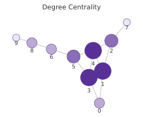
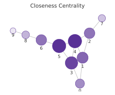
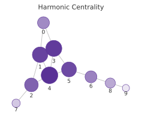
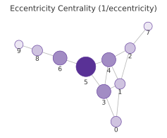
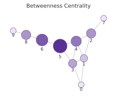
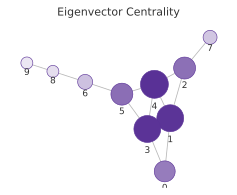
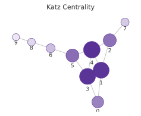

Who Is the Most Important Node? It Depends What You Ask
The big question of this module. Which node is the most important — and important in what sense?
Centrality is one of the most widely used — and most quietly misused — ideas in network analysis. This module asks what “important” can mean, and what it costs to answer.
You’ll learn:
- What centrality is, and why the question is meaningless until you say important for what.
- How to operationalize importance three different ways: by counting connections, by measuring distance, and by following walks.
- How each measure is actually computed, and what it costs on a large network.
- The limitations: when centralities agree, when they disagree, and why the disagreement is the interesting part.
Important in what sense?
Have you ever wondered who the most popular person in your school is? Or which idea is the most important in a subject? Or maybe which movie everyone’s talking about right now? These questions are all about finding out what’s important in a network of people, ideas, or things. In network science, we call this centrality.
Centrality or importance is a question of how important a node is in a network. But the notion of importance is somewhat vague. In what sense do we say a node is important?
That vagueness is not a defect to be tidied away. It is the subject. Every measure in this module is one precise answer to “important in what sense?”, and they are built to disagree with each other.
Who’s the Big Cheese in the University Clubs? (handed out in class; the PDF is being rewritten) — thirteen students in eight clubs. Rank them by hand, four different ways, before you read a single formula. Four questions, three different winners.
One small network, carried through the whole module
Every measure below is worked on the same five-node network, so you can compare the answers directly.
Nodes 1, 2, 3, 4, 5. Edges 1–2, 1–3, 2–3, 3–4, 4–5.
A network that small does not argue with itself. Whatever you ask of it, node 3 answers: most connections, shortest distances to everyone, most paths running through it, best-connected friends — node 3 wins all four. That makes it a good place to check arithmetic and a bad place to learn what centrality is.
So before any formula, here is a network of fifteen where the four questions give four different winners. One drawing, four buttons, and a crown that will not sit still. Press them in any order.
Nothing in the picture changed between those four crowns. Only the question did — and that is the whole module in one object. The rest of this page makes each question precise, and adds a few more.
Just count the friends
The simplest approach to measuring centrality is to count the connections of each node. This gives us degree centrality, which considers a node important if it has many direct connections. Degree centrality is just the count of the number of edges connected to a node (i.e., the number of neighbors, or degree in network science terminology). The most important node is thus the one with the highest degree.
c_i = d_i = \sum_{j} A_{ij}
where A_{ij} is the adjacency matrix of the network, and d_i is the degree of node i.
On our five-node network: d_1 = 2, d_2 = 2, d_3 = 3, d_4 = 2, d_5 = 1. Node 3 wins, node 5 comes last, and nodes 1, 2 and 4 tie. Hold on to that three-way tie — almost every measure below breaks it, and each breaks it differently.

Every panel like the one above shows the same ten-node network — a different, bigger network from our five-node example, and one whose nodes are numbered 0 to 9 because that is how Python counts. Their job is to show how a measure spreads across a network at a glance. The numbers you can check by hand are the five-node ones in the running text.
Degree centrality is a no brainer measure of centrality. It is also crude: it counts how many neighbors a node has and ignores entirely who those neighbors are.
The Golden Milestone: central means close to everyone
Let’s talk about an ancient Roman monument called the Milliarium Aureum, also known as the Golden Milestone. It was the starting point for measuring distances on all major roads in the Roman Empire. Emperor Augustus built it when Rome changed from a republic to an empire — the monument marked distances, but it also announced that power now had a single center. Perhaps the Romans understood the importance of being central in terms of distance, and this concept can be applied to define centrality in networks.
This family of centrality measures is based on shortest path distances between nodes. They consider a node important if it has short distances to other nodes or if it lies on many shortest paths.
Closeness centrality
Closeness centrality measures how close a node is to all other nodes in the network. A node is central if it is close to all other nodes, which is operationally defined as
c_i = \frac{N - 1}{\sum_{j \neq i} \text{shortest path length from } j \text{ to } i}
where N is the number of nodes in the network. The numerator, N - 1, is the normalization factor to make the centrality have a maximum value of 1.
Node 3 of our network reaches nodes 1, 2 and 4 in one step and node 5 in two, so its distances sum to 1+1+1+2 = 5 and c_3 = 4/5 = 0.8. Node 5 needs 1+2+3+3 = 9 steps in total, so c_5 = 4/9 = 0.44. The tie between nodes 1, 2 and 4 is already broken: node 4 scores 4/6 = 0.67 against 4/7 = 0.57 for nodes 1 and 2, because sitting next to the tail is a better place to stand than sitting inside the triangle.

Question: What would be a graph where a node has the maximum closeness centrality of value 1?
Harmonic centrality
The closeness centrality falls short for disconnected networks. This is because the shortest distance between two nodes in different connected components is infinite, making the closeness centrality of all nodes in the disconnected components zero.
A remedy is Harmonic centrality which adjusts closeness centrality (Beauchamp 1965) which is defined as
c_i = \sum_{j\neq i} \frac{1}{\text{shortest path length from } j \text{ to } i}
The distance between two nodes in different connected components has zero contribution to the harmonic centrality, making it a useful measure for disconnected networks. The reciprocal is taken before the sum rather than after, so one unreachable node adds zero instead of poisoning the whole score.
On our network, node 3 scores 1 + 1 + 1 + \tfrac12 = 3.5 and node 5 scores 1 + \tfrac12 + \tfrac13 + \tfrac13 = 2.17 — the same ranking as closeness here, but it would survive a network that fell into pieces.

Eccentricity centrality
While the closeness and harmonic centralities focus on “average” distance, eccentricity centrality focuses on the farthest distance from a node to any other node. It is defined as
c_i = \frac{1}{\max_{j} \text{shortest path length from } i \text{ to } j}
Node 3’s farthest node is node 5, two steps away, so c_3 = 1/2. Node 5’s farthest nodes are 1 and 2, three steps away, so c_5 = 1/3.

Unlike closeness or harmonic centrality, eccentricity centrality optimizes for the worst case, which is what you want when the worst case is what hurts: placing emergency services so that no address is too far from help, designing a network that stays reachable when parts of it fail, or siting a depot so that even the most remote customer gets a reasonable delivery time.
Betweenness centrality
Betweenness centrality considers that a node is important if it lies on many shortest paths between other nodes.
c_i = \sum_{\substack{j < k \\ j \neq i,\; k \neq i}} \frac{\sigma_{jk}(i)}{\sigma_{jk}}
where \sigma_{jk} is the number of shortest paths between nodes j and k, and \sigma_{jk}(i) is the number of those shortest paths that pass through node i.
Why divide by \sigma_{jk} at all? Because two nodes can be joined by several different paths of the same shortest length, and then no single node deserves full credit for the connection. In a square 1–2–3–4–1, nodes 1 and 3 are two steps apart by two different routes, so \sigma_{13} = 2; node 2 lies on one of them and collects 1/2, and so does node 4.
On our five-node network, node 3 is the only route between \{1,2\} and \{4,5\}, so it collects the four pairs (1,4), (1,5), (2,4), (2,5) and scores 4. Node 4 collects (1,5), (2,5), (3,5) and scores 3. Nodes 1, 2 and 5 lie on no shortest path between anyone and score 0 — including node 1, which is tied with node 4 on degree.

A man is known by the company he keeps
“A man is known by the company he keeps” is a quote from Aesop, who lived in ancient Greece, further back in time than the Roman Empire. It suggests that a person’s character is reflected by the people this person is friends with. This idea can be applied to define the centrality of a node in a network.
This family of centrality measures considers that a node is important if it is connected to other important nodes, or if it receives many “walks” or “votes” from other nodes in the network.
Aesop was an ancient Greek storyteller believed to have lived around the 6th century BCE. He is famous for his fables — short stories that use animals and everyday situations to teach moral lessons.
Centralities based on centralities
Eigenvector centrality considers that a node is important if it is connected to other important nodes. Yes, it sounds circular! But it is actually computable, and the way to compute it is also the way to feel it.
Give every node one point. Then, over and over, replace each node’s score with the sum of its neighbors’ scores. Nothing else. On our five-node network, starting from all ones:
| Round | node 1 | node 2 | node 3 | node 4 | node 5 |
|---|---|---|---|---|---|
| 0 | 1 | 1 | 1 | 1 | 1 |
| 1 | 2 | 2 | 3 | 2 | 1 |
| 2 | 5 | 5 | 6 | 4 | 2 |
| 3 | 11 | 11 | 14 | 8 | 4 |
Round 1 is just the degree. By round 2 something new has happened: node 4 has fallen behind nodes 1 and 2 even though all three have degree 2, because node 4 spends half its connections on the dead end node 5, while nodes 1 and 2 feed each other and the hub. That is “a man is known by the company he keeps”, computed.
The numbers keep growing, so divide by the largest each round to keep them in range. Then they settle:
(c_1, c_2, c_3, c_4, c_5) \rightarrow (0.82,\; 0.82,\; 1,\; 0.57,\; 0.26)
and they stop moving. This repeat-and-rescale procedure is called power iteration, and it is all you need to compute eigenvector centrality in practice.
“They settle” is a claim you should not have to take on faith. Step through the rounds below. The white digit inside a node is its name; the coloured number beside it is its score for that round; the bar underneath is that same score divided by the largest score of the round. Watch the raw numbers and the bars behave completely differently.
Written as an equation, “settled” means that one more round of passing scores around only rescales the vector by some constant \lambda:
\lambda c_i = \sum_{j} A_{ij} c_j \qquad \text{or, in matrix form,} \qquad \lambda \mathbf{c} = \mathbf{A} \mathbf{c}
Note A_{ij} = 1 if j is a neighbor of i, and otherwise A_{ij} = 0, so the right-hand side is exactly “the sum of my neighbors’ scores”. A vector \mathbf{c} that satisfies this is called an eigenvector of \mathbf{A}, and the rescaling factor \lambda is its eigenvalue — an eigenvector is simply a vector that the matrix does not turn, only stretches. For our network \lambda = 2.21: at the settled point, every round multiplies all scores by 2.21.
A matrix has many eigenvectors, so which one is the centrality? We need the one whose entries are all positive — negative importance would be meaningless. The Perron-Frobenius theorem says that for a connected network there is exactly one such eigenvector, and it is the one belonging to the largest eigenvalue. That is what power iteration converges to, and that is the eigenvector centrality. The precise statement, and the proof that power iteration converges, are in the appendix.

Read this in terms of Module 1: {\bf A}^t counts walks of length t. So power iteration is literally saying “a node is important if many walks of length t end there”, and eigenvector centrality is the limit of that statement as t \rightarrow \infty. In Module 7 the same iteration reappears as a random walk converging to its stationary distribution.
Katz centrality
Katz centrality addresses a limitation of eigenvector centrality, which tends to pay too much attention to a small number of nodes that are well connected to the network while under-emphasizing the importance of the rest of the nodes. The solution is to give every node a little score for free.
c_i = \beta + \alpha \sum_{j} A_{ij} c_j
Here \beta is the free score every node gets just for existing, and \alpha is an attenuation factor that decides how much a node’s neighbors add on top. Solving this (the algebra is in the appendix) gives a result worth stating on its own:
Katz centrality counts every walk arriving at a node, discounting a walk of length t by \alpha^t.
c_i = \beta \sum_{t=0}^{\infty} \alpha^t \left(\text{number of walks of length } t \text{ ending at } i\right)
Take node 3 of our network, with \beta = 1 and \alpha = 0.1. There are 3 walks of length 1 ending at node 3 (its neighbors) and 6 walks of length 2, so
c_3 = 1 + 3(0.1) + 6(0.01) + \cdots = 1.38.
Short walks — close neighbors — count heavily; long walks contribute progressively less. The parameter \alpha sets how far influence travels: small \alpha makes the measure behave almost like degree centrality, large \alpha pushes it toward eigenvector centrality.
How far can influence travel before the math breaks?
There is a ceiling on \alpha. Each extra step multiplies the number of walks by roughly \lambda_{\max}, the largest eigenvalue of \mathbf{A} — the very same number that appeared in eigenvector centrality. Each extra step also multiplies the discount by \alpha. So the terms shrink only when
\alpha < \frac{1}{\lambda_{\max}}.
For our five-node network \lambda_{\max} = 2.21, so \alpha must stay below 0.45. Choose \alpha above that ceiling and the walk counts grow faster than the discount shrinks: the sum diverges and you get meaningless, often negative, scores. In practice one computes \lambda_{\max} first and picks \alpha as a fraction of the ceiling, such as 0.9/\lambda_{\max}.
Notice what happens as \alpha approaches the ceiling: the longest walks come to dominate, and Katz centrality converges to eigenvector centrality. The two measures are the two ends of a single dial.

PageRank
PageRank is the celebrated idea behind Google Search and can be seen as a cousin of Katz centrality.
PageRank was invented for the Web, where a link has a direction: this page links to that one, not the other way round. That forces a convention on us, and it is the first time in this module that the order of the two indices matters.
From here on, A_{ij} = 1 means there is an edge from i to j. Two sums that look almost identical then mean opposite things:
- \sum_j A_{ij}(\cdot)_j runs over the nodes that i points to. Counting them gives i’s out-degree, d^{\text{out}}_i = \sum_j A_{ij}.
- \sum_j A_{ji}(\cdot)_j runs over the nodes that point to i. Counting them gives i’s in-degree, d^{\text{in}}_i = \sum_j A_{ji}.
Every formula before this one summed over A_{ij} and got away with it, because an undirected edge points both ways and the two sums are the same thing. PageRank is about score arriving, so it must sum over A_{ji}. Getting this index order right is the whole game in PageRank and in HITS.
c_i = \underbrace{(1-r) \sum_j A_{ji}\frac{c_j}{d^{\text{out}}_j}}_{\text{score arriving from neighbors}} + \underbrace{r \cdot \frac{1}{N}}_{\text{teleportation}}
where d^{\text{out}}_j is the out-degree of node j (the number of edges pointing out from node j), and r is the teleportation probability. The term c_j/d^{\text{out}}_j represents that the score of node j is divided by the number of nodes to which node j points. In the Web, this is like a web page distributing its score among the web pages it points to. It is based on an idea of traffic, where the viewers of a web page are evenly transferred to the linked web pages. A web page is important if it has a high traffic of viewers.
The teleportation term is what stops the traffic from getting stuck. With probability r (typically 0.15) the visitor abandons the links entirely and jumps to a page chosen uniformly at random, which guarantees that every page keeps receiving some traffic and that the scores settle to a single answer.
PageRank on the five-node network
Our little network is undirected, so every edge points both ways and d^{\text{out}}_j is simply the degree d_j. Start every node with an equal share of the traffic, c_i = 1/5 = 0.200, and take r = 0.15. Now do one round by hand, for node 4:
- Node 4 is pointed at by node 3 and by node 5.
- Node 3 has three edges, so it splits its 0.200 three ways and sends 0.200/3 = 0.067 along each. Node 5 has one edge, so it sends its whole 0.200/1 = 0.200 to node 4.
- Arriving in total: 0.067 + 0.200 = 0.267. Keep 85% of it: 0.85 \times 0.267 = 0.227.
- Add the teleportation share, 0.15/5 = 0.030.
- New score: 0.227 + 0.030 = 0.257.
Do that for all five nodes, then again, and the traffic settles:
| Round | node 1 | node 2 | node 3 | node 4 | node 5 |
|---|---|---|---|---|---|
| 0 | 0.200 | 0.200 | 0.200 | 0.200 | 0.200 |
| 1 | 0.172 | 0.172 | 0.285 | 0.257 | 0.115 |
| 2 | 0.184 | 0.184 | 0.285 | 0.209 | 0.139 |
| settled | 0.192 | 0.192 | 0.283 | 0.213 | 0.120 |
(Rounded to three decimals; the exact rows each add up to 1, because the scores are shares of one visitor’s time.)
Node 3 wins again — but look at node 4. Eigenvector centrality ranked this network (0.82,\, 0.82,\, 1,\, 0.57,\, 0.26) and put node 4 below nodes 1 and 2. PageRank puts it above them, 0.213 against 0.192. The whole difference is the division by out-degree. Node 5 is a dead end with a single edge, so everything it has comes straight back to node 4 — all 0.120 of it. Node 2 has two edges, so node 1 only ever receives half of node 2’s score, 0.096. Eigenvector centrality punished node 4 for spending half its links on an unimportant neighbor; PageRank rewards it, because an unimportant neighbor with nowhere else to go hands back everything it is given. Whether a dead-end friend is a liability or an asset depends on which of the two you asked.
A visual walkthrough of the algorithm: How PageRank works.
Two more members of the family
Two well-known relatives are worth knowing by name; both are worked out in the appendix.
HITS splits importance in two for directed networks. A node is a good hub if it points to good authorities, and a good authority if good hubs point to it. Think of a review site that links to the best restaurants (a hub) and the restaurant everyone links to (an authority) — the same network gives each node two different scores.
Personalized PageRank asks the question from somewhere in particular. Imagine a network of movies connected by similarity. Standard PageRank ranks movies by overall centrality; but a student who just watched The Matrix wants what is central from there. Personalized PageRank sends the traffic out from The Matrix and keeps returning it there, so the scores measure closeness to that one node rather than global popularity.
PageRank and Personalized PageRank have been one of the most influential ideas in network science. There are many variants and extensions of these ideas. Here are some of my favorites:
(Lambiotte and Rosvall 2012) proposes a teleportation scheme that corrects the bias PageRank picks up from the degree of the node the walker teleports to.
(Wu et al. 2017) proposes a second-order random walk whose next step depends on where the walker came from, not only where it is.
(Tong et al. 2006) gives a fast approximation algorithm for random walk with restart, which is what makes personalized ranking practical on large graphs.
Bridges and brokers
The centralities above mostly reward being well connected. Betweenness rewards something different, and the difference is worth dwelling on.
Picture two dense friend groups joined by a single person who has one friend in each. That person has degree 2 — nearly the lowest in the network. By degree, eigenvector or PageRank they are a nobody. By betweenness they are the single most important node in the network, because every path between the two groups runs through them.
Such nodes are called bridges or brokers, and they are the reason betweenness earns its keep:
- Remove a broker and the network splits. This is precisely the vulnerability Module 3 studies, and it is invisible to degree-based attack strategies.
- Brokers control flow. Information, resources, or a disease passing between groups must go through them, which is leverage — in sociology this is the source of Ronald Burt’s “structural holes” theory of social capital.
- Brokers are structurally uncomfortable. They belong to two worlds without being central in either. High betweenness with low degree is a distinctive and informative signature.
This is also why Girvan-Newman (Module 5) detects communities by deleting edges with the highest betweenness: the edges that bridge groups carry the most shortest paths, so removing them peels the communities apart.
The widget at the top of this module is exactly that picture. Press most contacts? and then most paths?, and watch node 10 — two crowds, one broker — travel from the bottom of the list to the top.
There is no best centrality, only a matching question
Decide what “important” means for your problem first, then pick.
| If you want to find… | Ask… | Use |
|---|---|---|
| Popular nodes | Who has the most direct connections? | Degree |
| Efficient nodes | Who can reach everyone else quickly? | Closeness, Harmonic |
| Fair locations | Who is not too far from anyone? | Eccentricity |
| Critical nodes | Who, if removed, breaks the flow? | Betweenness |
| Influential nodes | Who is connected to other influential nodes? | Eigenvector, Katz, PageRank |
| Nodes relevant to a specific node | Who is close to this node in particular? | Personalized PageRank |
A worked example: to place a new hospital you want eccentricity or closeness (nobody should be far from care). To decide which substation to armor you want betweenness (which failure severs the grid). To decide whom to vaccinate you want degree or PageRank (who spreads fastest). Three different “most important” nodes in the same network.
Cost matters too. Closeness and betweenness need shortest paths between all pairs of nodes, so they slow down badly as the network grows; degree, eigenvector centrality and PageRank only ever look at one node and its neighbors at a time, so they stay cheap. On a million-node network PageRank is routine and exact betweenness is not, which is why practitioners approximate betweenness by sampling. The appendix puts numbers on this.
Centralities usually agree — until they don’t
In most real networks the various centralities correlate strongly, and degree correlates with almost everything. That is genuinely useful: if a cheap measure gives nearly the same ranking as an expensive one, use the cheap one.
But the correlation is a property of the network, not a law. Two extreme cases make the point:
- A star graph. The center has the maximum possible degree, closeness and betweenness — every measure agrees it is the most important node, and every leaf is equally unimportant. Total agreement.
- A path graph. Every internal node has degree 2, so degree centrality is flat and uninformative. Betweenness, however, peaks sharply in the middle and falls to zero at the ends. Total disagreement.
The lesson is that centralities diverge precisely where the structure is interesting — around bridges, bottlenecks and peripheries. When two measures disagree strongly on a real network, that disagreement is telling you about its structure.
Six places this already decides something
- Robustness and infrastructure: identifying which nodes to protect, or which an adversary would attack (Module 3).
- Epidemiology: finding super-spreaders and choosing vaccination targets. Note that the friendship paradox (Module 4) gives a way to find high-centrality nodes without mapping the network.
- Social dynamics: locating leaders, influencers, and the brokers who connect otherwise separate communities.
- Web search: PageRank and HITS were built for exactly this, and ranking is still where walk-based centrality is most visible.
- Economics and finance: detecting systemically important institutions, and finding chokepoints in supply chains.
- Neuroscience and biology: hub regions in brain connectomes; essential proteins in interaction networks, which tend to be high-degree.
What you can now do
- Compute degree, closeness, harmonic, eccentricity and betweenness by hand on a small network, and say which one breaks a tie and why.
- Run power iteration on paper and explain eigenvector centrality without the word “eigenvector”.
- Place Katz and PageRank on the dial between degree and eigenvector centrality, and pick a safe attenuation factor.
- Given a stated goal, choose a centrality and defend the choice.
Next: compute all of them on a real network, then the exercises and assignments. The algebra behind eigenvector centrality, Katz, HITS and Personalized PageRank is in the appendix.